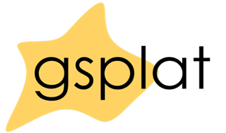

|

|
gsplat: An Open-Source Library for Gaussian Splatting
Vickie Ye, Ruilong Li, Justin Kerr, Matias Turkulainen, Brent Yi, Zhuoyang Pan, Otto Seiskari, Jianbo
Ye, Jeffrey Hu, Matthew Tancik, Angjoo Kanazawa
JMLR, 2024
project page
/
arXiv
/
code
gsplat is an open-source library designed for training and developing Gaussian Splatting methods. It
features a front-end with Python bindings compatible with the PyTorch library and a back-end with
highly optimized CUDA kernels. gsplat offers numerous features that enhance the optimization of
Gaussian Splatting models, which include optimization improvements for speed, memory, and
convergence times. Experimental results demonstrate that gsplat achieves up to 10% less training
time and 4x less memory than the original implementation. Utilized in several research projects,
gsplat is actively maintained on GitHub. Source code is available at this https URL under Apache License 2.0.
We welcome contributions from the open-source community.
|
{kind=link}